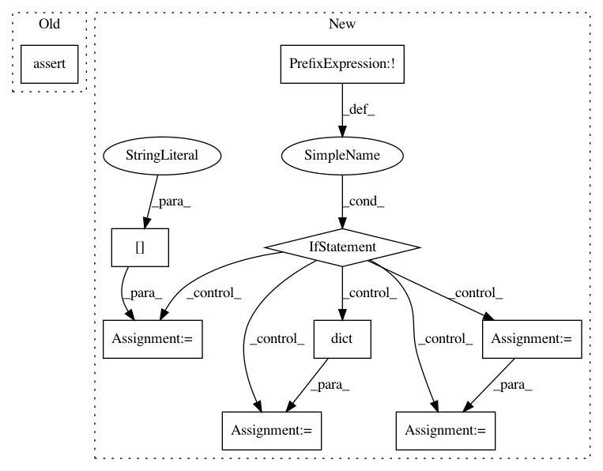

51a0c5fbe8e236cdb7e58afce66d7639d8fe9a45,tensorflow_transform/saved/input_fn_maker_test.py,InputFnMakerTest,_test_build_parsing_transforming_serving_input_fn,#InputFnMakerTest#Any#,269
Before Change
[outputs["transformed_a"], outputs["transformed_b"]],
feed_dict=feed_inputs)
with self.assertRaises(Exception):
session.run(outputs["transformed_label"])
self.assertEqual(21, transformed_a[0][0])
After Change
batch_shape = (len(examples), 1)
sparse_batch_shape = batch_shape
if not shape:
// transformed_b is sparse so _convert_scalars_to_vectors did not fix it
sparse_batch_shape = sparse_batch_shape[:1]
transformed_b_dict = dict(zip([tuple(x + [0])
for x in transformed_b.indices.tolist()],
transformed_b.values.tolist()))
else:
transformed_b_dict = dict(zip([tuple(x)
for x in transformed_b.indices.tolist()],
transformed_b.values.tolist()))
self.assertEqual(batch_shape, tuple(transformed_a.shape))
self.assertEqual(sparse_batch_shape, tuple(transformed_b.dense_shape))
self.assertEqual(21, transformed_a[0][0])
In pattern: SUPERPATTERN
Frequency: 3
Non-data size: 9
Instances
Project Name: tensorflow/transform
Commit Name: 51a0c5fbe8e236cdb7e58afce66d7639d8fe9a45
Time: 2017-10-20
Author: tf-transform-dev@google.com
File Name: tensorflow_transform/saved/input_fn_maker_test.py
Class Name: InputFnMakerTest
Method Name: _test_build_parsing_transforming_serving_input_fn
Project Name: Epistimio/orion
Commit Name: 05cb9508a1281d02de8009fe1d333a26670fe966
Time: 2021-03-30
Author: breuleux@gmail.com
File Name: src/orion/storage/track.py
Class Name: Track
Method Name: __init__
Project Name: Epistimio/orion
Commit Name: 3860c9c27e43d880370c714944043d63cfa2097d
Time: 2021-04-06
Author: xavier.bouthillier@umontreal.ca
File Name: src/orion/storage/track.py
Class Name: Track
Method Name: __init__